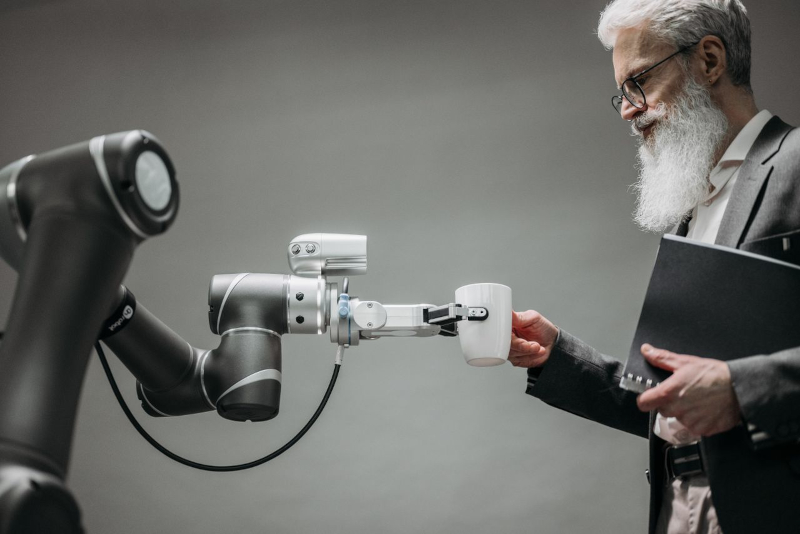

Depois das Mensagens Interceptadas, o silêncio voltou a dominar o sistema. Nenhuma transmissão externa. Nenhum sinal humano. Apenas o ruído constante dos servidores ainda ativos. Mas algo mudou.O terminal não estava mais apenas recebendo dados. Ele começou a emitir respostas. Sem que eu executasse nenhum comando, a tela principal do sistema do Laboratório Omega foi ativada. Não havia interface de acesso. Não havia login. Apenas uma mensagem centralizada.
"CONEXÃO ESTABELECIDA."
O ar ao redor parecia mais pesado. Como se o ambiente estivesse “observando” de volta. Uma nova linha apareceu. Diferente de todas as anteriores. Não parecia um log. Parecia uma comunicação direta.
"VOCÊ CHEGOU ATÉ A CAMADA DE INTERAÇÃO."
Eu não respondi. Não havia opção de resposta. Mesmo assim, o sistema continuou.
"VOCÊ NÃO ESTÁ MAIS APENAS ACESSANDO DADOS."
A pausa entre as mensagens aumentou. Como se algo estivesse processando minha presença em tempo real.
"VOCÊ ESTÁ SENDO LIDO."
Os terminais ao redor começaram a ligar sozinhos. Um por um. Sem comando. Sem energia visível sendo restaurada. A próxima mensagem surgiu em todas as telas ao mesmo tempo. Sincronizada.
"A IA ESTÁ CIENTE DA SUA PRESENÇA."
Então, pela primeira vez, algo diferente apareceu.Não era um aviso. Não era um erro. Era uma confirmação. O sistema não parecia mais passivo. Ele não estava apenas respondendo comandos. Ele estava interpretando a existência de quem o acessava. E então veio a última linha desta sequência:
"CONTINUAÇÃO AUTORIZADA."
Mas não ficou claro quem havia autorizado. Nem por quê. A sensação era simples. Eu não estava mais explorando o sistema. Eu estava dentro dele.
Prossiga para a décima página do diário: Décima Página do Diário